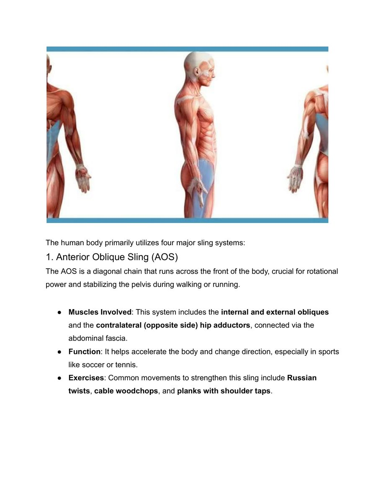
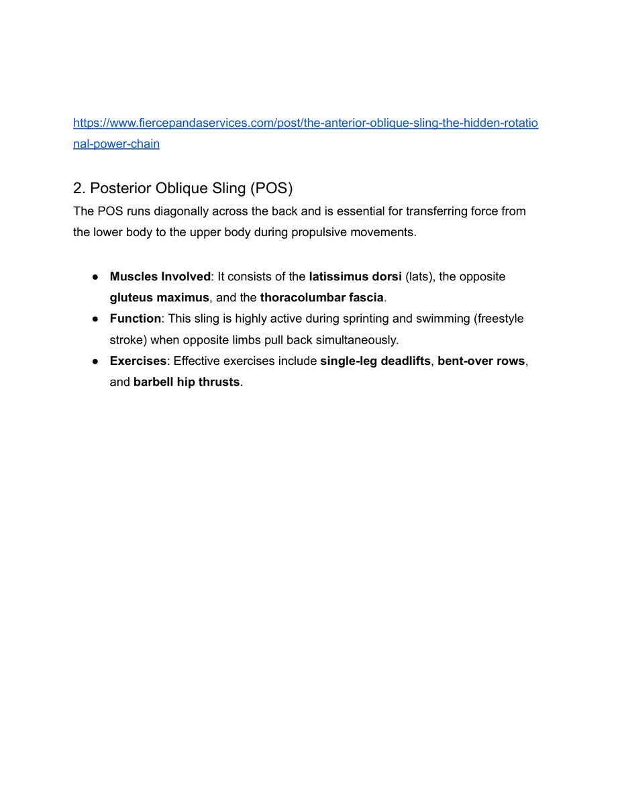

1. Khái Niệm Dây Chằng Cân Cơ (Myofascial Slings)
Trong y học thể thao truyền thống, các nhóm cơ thường được phân tích tách biệt theo từng khớp chuyển động (ví dụ: bắp tay co khuỷu, cơ đùi duỗi gối). Tuy nhiên, cơ thể con người trong hoạt động thể thao tốc độ cao không bao giờ vận hành bằng các khối cơ đơn lẻ. Thay vào đó, toàn bộ hệ vận động được kết nối thông qua một mạng lưới màng cân cơ liên tục gọi là hệ thống dây chằng cân cơ (myofascial slings).
Các dây chằng cân cơ đóng vai trò như những sợi dây cáp chéo đan xen quanh khung xương, vừa có chức năng neo giữ khung chậu và cột sống ở trạng thái ổn định vững chắc, vừa đóng vai trò như lò xo đàn hồi tích trữ và giải phóng động lượng cực lớn.

Hình 1: Bốn hệ thống dây chằng cân cơ chính (The Four Major Sling Systems). Sự phối hợp nhịp nhàng giữa bốn chuỗi này biến cơ thể thành một cỗ máy đòn bẩy đàn hồi hoàn hảo.2. Bốn Hệ Thống Dây Chằng Cân Cơ Chính Của Cơ Thể
Cơ thể con người vận dụng bốn chuỗi dây chằng cân cơ cốt lõi để tạo ra chuyển động và duy trì thăng bằng trên sân quần vợt:
- Chuỗi chéo trước (Anterior Oblique Sling - AOS):
Bao gồm cơ chéo bụng ngoài (external oblique), cơ chéo bụng trong đối bên (contralateral internal oblique), kết nối qua màng cân bụng (abdominal fascia) với nhóm cơ khép háng đối bên (adductors). Đây là Chuỗi động học liên hoàn quan trọng hàng đầu cho chuyển động xoay thân và gập người bùng nổ, đặc biệt là cú thuận tay (forehand) hiện đại.
- Chuỗi chéo sau (Posterior Oblique Sling - POS):
Bao gồm cơ lưng rộng (latissimus dorsi), màng cân ngực thắt lưng (thoracolumbar fascia) và cơ mông lớn đối bên (contralateral gluteus maximus). Chuỗi này tạo ra lực đẩy xoay ngược chiều và duỗi thân, là cỗ máy sinh lực chính cho quả giao bóng (serve) và các cú đập smash.
- Chuỗi cơ bên (Lateral Sling - LS):
Bao gồm cơ mông nhỡ (gluteus medius), cơ căng mạc đùi (TFL), dải chậu chày (IT band) và cơ vuông thắt lưng đối bên (quadratus lumborum). Chuỗi này chịu trách nhiệm khóa thăng bằng cho khung chậu khi đứng trên một chân, tạo điểm tựa ổn định cho các bước chạy đổi hướng cắt góc (lateral agility).
- Chuỗi dọc sâu (Deep Longitudinal Sling - DLS):
Bao gồm cơ dựng sống (erector spinae), dây chằng cùng ụ ngồi (sacrotuberous ligament), cơ nhị đầu đùi (biceps femoris) và cơ chày trước/sau chạy xuống lòng bàn chân. Chuỗi này truyền tải lực phản hồi mặt đất (ground reaction force) từ bàn chân thẳng đứng lên trục cột sống.

Hình 2: Chuỗi chéo sau (Posterior Oblique Sling). Sự kết nối chéo giữa cơ mông lớn bên này và cơ lưng rộng bên kia qua màng cân ngực thắt lưng tạo nên bệ phóng uy lực nhất cho quả giao bóng.Ý Nghĩa Phòng Ngừa Chấn Thương Khớp Vai
Khi các Hệ thống dây chằng chéo cân mạc (AOS và POS) không được kích hoạt đúng nhịp hoặc bị yếu, vận động viên sẽ theo bản năng dùng cơ bắp cánh tay và khớp vai để cố bù đắp lực đánh. Hiện tượng này dẫn đến tình trạng quá tải cục bộ tại nhóm cơ chóp xoay (rotator cuff) và cơ nhị đầu cánh tay, gây ra hội chứng chèn ép khớp vai và rách sụn viền khớp (SLAP tear). Huấn luyện dây chằng cân cơ chính là phương pháp bảo vệ vai tự nhiên và bền vững nhất.